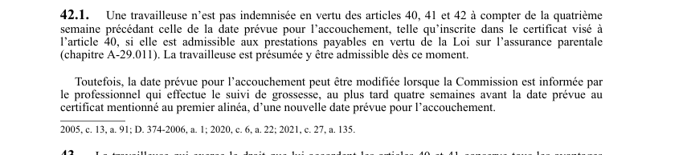

art-42.1-LSST : limite d'indemnisation avant accouchement
Un article du wiki ⚖️ Recueil législatif
En bref
Une travailleuse n'est pas indemnisée en vertu des articles 40. Il s'agit d'une obligation.
- 41 et 42 à compter de la quatrième semaine précédant la date prévue.
- Cessation de l'indemnisation à partir de la quatrième semaine précédant l'accouchement prévu.
- Date prévue modifiable sur avis du professionnel au plus tard quatre semaines avant.
🌐 LegisQuébec · 📄 PDF officiel (page 14)
Texte officiel : capture du PDF

Toucher l'image pour l'agrandir🔗 Ouvrir a cette page : LSST.pdf : page 14 · texte a jour au 26 mars 2024
Voir aussi
- art. 41 : cessation travail travailleuse enceinte · définition : si l'affectation demandée n'est pas effectuée immédiatement, la travailleuse peut cesser de travailler jusqu'à ce que l'affectation soit faite ou jusqu'à la date de son accouchement, lequel s'entend de la fin d'une grossesse par la mise au monde d'un enfant viable ou non.
- art. 42 : articles 36-37.3 applicables grossesse · obligation : les articles 36 à 37.3 s'appliquent, compte tenu des adaptations nécessaires, lorsqu'une travailleuse exerce le droit que lui accordent les articles 40 et 41.
- art. 43 : avantages travailleuse enceinte affectée · obligation : la travailleuse qui exerce les droits des articles 40 et 41 conserve tous les avantages liés à l'emploi qu'elle occupait avant son affectation ou sa cessation de travail ; à la fin de l'affectation ou de la cessation de travail.
- art. 44 : paiements temporaires à la travailleuse · faculté : sur réception d'une demande d'une travailleuse, la Commission peut faire des paiements temporaires si elle est d'avis qu'elle accordera probablement l'indemnité ; si la demande n'est pas accordée, les montants versés ne sont pas recouvrables.
- 🔧 Modifié par : LMRSST · Article modificateur de la LMRSST.
- ↑ Loi : LSST
Pages qui pointent ici (5)
- art-135-LMRSST : modifie l'art. 42.1 LSST Recueil législatif
- art-41-LSST : cessation travail travailleuse enceinte Recueil législatif
- art-42-LSST : dispositions applicables à la grossesse Recueil législatif
- art-43-LSST : avantages travailleuse enceinte affectée Recueil législatif
- art-44-LSST : paiements temporaires à la travailleuse Recueil législatif